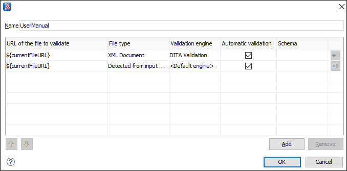

Configuring Validation Scenarios for a Framework
To associate a validation scenario with a specific framework, follow these steps:
- Open the Preferences dialog box and go to Document Type Association.
- Select the document type and click the Edit button to open the Document Type Configuration dialog box, then choose the Validation tab. This tab displays a list of document types. To set one or more of the validation scenarios listed in this tab to be used as the default validation scenario (when another one is not specified in the validation process) for a specific document type, check the Default box for that specific document type.
-
To edit an existing scenario, select the scenario and click the
 Edit button. To add a
new scenario, click the
Edit button. To add a
new scenario, click the  New button.
In either case, a scenario configuration dialog box is displayed. It lists all the validation units for the scenario.
New button.
In either case, a scenario configuration dialog box is displayed. It lists all the validation units for the scenario.Figure 1. Validation Scenario Configuration Dialog Box This scenario configuration dialog box allows you to configure the following information and options:- Name
- The name of the validation scenario.
- URL of the file to validate
- The URL of the main module that includes the current module. It is also the
entry module of the validation process when the current one is validated. To edit
the URL, double-click its cell and
specify the URL of the main module by doing one of the following:
- Enter the URL in the text field or select it from the drop-down list.
- Use the
 Browse drop-down button to browse for a local, remote, or
archived file.
Browse drop-down button to browse for a local, remote, or
archived file. -
Use the
 Insert Editor Variable button to
insert an editor
variable or a custom editor
variable.
Insert Editor Variable button to
insert an editor
variable or a custom editor
variable.Figure 2. Insert an Editor Variable 
- File type
- The type of the document that is validated in the current validation unit. Oxygen XML Author automatically selects the file type depending on the value of the URL of the file to validate field.
- Validation engine
-
You can select one of the engines available in Oxygen XML Author for validation of the particular document type.
Default engine means that the default engine is used to run the validation for the current document type, as specified in the preferences page for that type of document (for example, XSLT preferences page, XML Schema preferences page).
The DITA Validation engine performs DITA-specific checks in the context of the specifications (it is similar to the checks done with the DITA Maps Manager
 Validate and Check for
Completeness action, but for a local file rather than
an entire DITA
map).
Validate and Check for
Completeness action, but for a local file rather than
an entire DITA
map).The Table Layout Validation engine looks for table layout problems (for more information, see Report table layout problems).
- Automatic validation
- If this option is selected, the validation operation defined by this row is also applied by the automatic validation feature. If the Automatic validation feature is disabled in the Document Checking preferences page, then this option is ignored, as the preference setting has a higher priority.
- Schema
- This option becomes active when you set the File type to XML Document and allows you to specify the schema used for the validation unit.
 Specify
Schema
Specify
Schema-
Opens the Specify Schema dialog box that allows you to set a schema to be used for validating XML documents.
Figure 3. Specify Schema Dialog Box 
The Specify Schema dialog box contains the following options:
- Use detected schema
- Uses the schema detected for the particular document.
- Use custom schema
- Allows you to specify the schema using the following options:
-
URL - Allows you to specify or select a URL for
the schema. It also keeps a history of the last used schemas. The URL
must point to the schema file that can be loaded from the local disk
or from a remote server through HTTP(S), FTP(S). You can specify the URL
by using the text field, the history drop-down, the Insert Editor Variables button, or the
browsing actions in the Browse drop-down
list.
- Schema type - Select a possible schema type from this combo box that is populated based on the extension of the schema file that was entered in the URL field. The possible schema types are: XML Schema, DTD, Relax NG, Relax NG Compact, Schematron, or NVDL.
- Embedded Schematron rules - If you have selected XML Schema or Relax NG schemas with embedded Schematron rules and you want to use those embedded rules, select this option.
- Extensions- Opens a dialog box that allows you to specify Java extension JARs to be used during the validation.
- Public ID - Allows you to specify a public ID if you have selected a DTD.
- Schematron phase - If you select a Schematron schema, this drop-down list allows you to select a Schematron phase that you want to use for validation. The listed phases are defined in the Schematron document.
-
URL - Allows you to specify or select a URL for
the schema. It also keeps a history of the last used schemas. The URL
must point to the schema file that can be loaded from the local disk
or from a remote server through HTTP(S), FTP(S). You can specify the URL
by using the text field, the history drop-down, the
 Move
Up
Move
Up- Moves the selected validation unit up one spot in the list.
- Move Down
- Moves the selected validation unit down one spot in the list.
- Add
- Adds a new validation unit to the list.
- Remove
- Removes an existing validation unit from the list.
- Configure any of the existing validation units according to the information above, and you can use the buttons at the bottom of the table to add, remove, or move validation units. Note that if you add a Schematron validation unit, you can also select the validation phase.
-
Click Ok.
The newly created validation scenario is now included in the list of scenarios in the Validation tab. You can use the Default checkbox to specify that the new scenario be used as the default validation scenario when another specific scenario is not specified in the validation process.